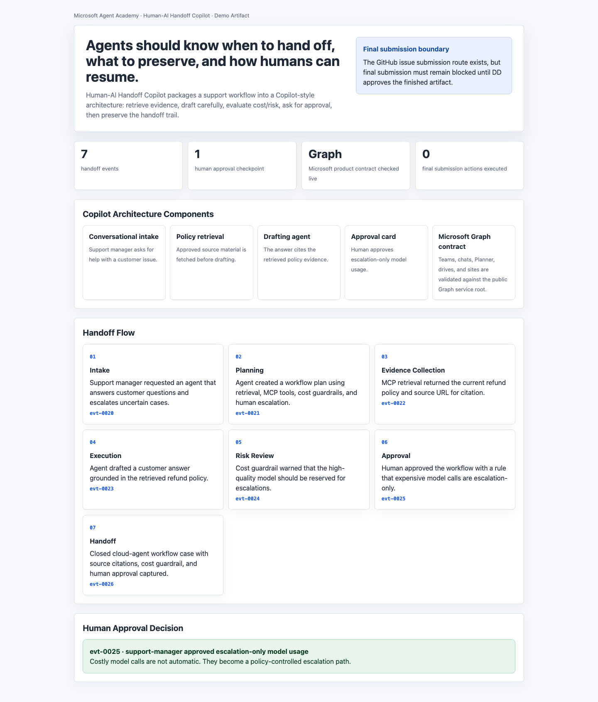
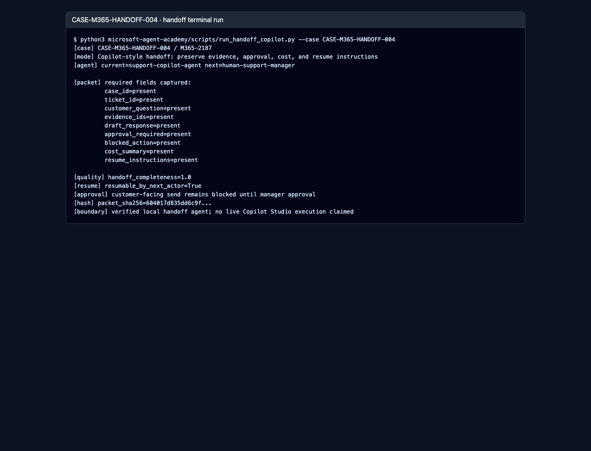
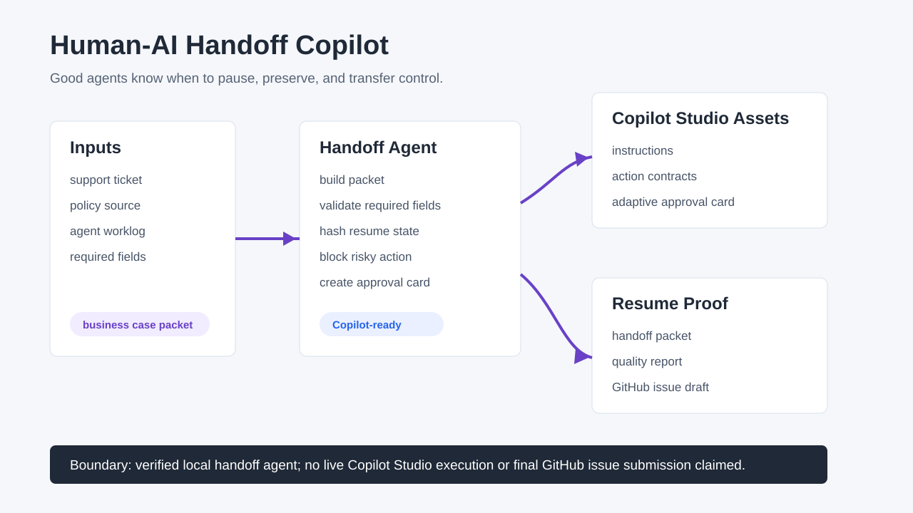

Working Proof
microsoft_local_checks_ok handoff_completeness=1.0 resumable_by_next_actor=True approval_required=true microsoft_graph_contract=ok
A Copilot-style workflow that lets an AI agent pause safely, preserve evidence, block risky action, and hand the work to the next human or AI without losing the trail.
AI agents can draft, search, and analyze quickly. The hard part is what happens when the agent must stop: a manager needs to approve, another teammate needs to continue, or a future AI needs to resume the work. This product turns that messy handoff into a verified packet.
microsoft_local_checks_ok handoff_completeness=1.0 resumable_by_next_actor=True approval_required=true microsoft_graph_contract=ok
This is a verified local handoff agent with Copilot Studio-ready assets and a live Microsoft Graph service-root contract check. It does not claim live Copilot Studio execution yet.




bash microsoft-agent-academy/scripts/run_microsoft_local_checks.sh